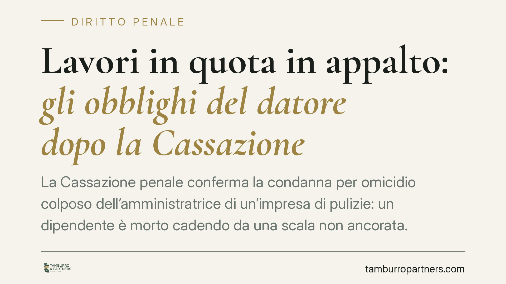

Lavori in quota in appalto: gli obblighi del datore dopo la Cassazione
La Cassazione penale conferma la condanna per omicidio colposo dell'amministratrice di un'impresa di pulizie: un dipendente è morto cadendo da una scala non ancorata. Il principio è netto: anche quando il lavoro in quota è occasionale, il datore deve valutare i rischi, formare il lavoratore e fornire i dispositivi di protezione. Nessuna deroga per la brevità dell'intervento.

Il fatto
Un lavoratore di un'impresa di pulizie, operante in appalto per un teatro committente, è caduto da una scala non ancorata mentre svolgeva un'attività in altezza. L'infortunio ha avuto esito mortale.
La Cassazione Penale, Sezione IV, ha confermato la condanna dell'amministratrice dell'impresa appaltatrice per omicidio colposo (art. 589 c.p.), con costituzione delle parti civili. Il punto centrale non è stato il carattere episodico dell'attività, ma l'assenza di tutte le misure che la normativa impone, a prescindere dalla durata dell'intervento.
Inquadramento normativo
Il quadro di riferimento è il D.lgs. 81/2008, il Testo Unico sulla sicurezza sul lavoro.
L'art. 26 disciplina gli appalti interni e impone sia al committente sia all'appaltatore un obbligo di cooperazione e coordinamento: valutare i rischi da interferenza, scambiarsi le informazioni sui pericoli presenti, redigere il DUVRI (Documento Unico di Valutazione dei Rischi da Interferenze) nei casi previsti. La presenza di un committente non trasferisce né attenua gli obblighi del datore appaltatore verso i propri dipendenti.
Per i lavori in quota valgono gli artt. 107, 111 e 113. L'art. 107 definisce "lavoro in quota" ogni attività svolta a un'altezza superiore a due metri rispetto a un piano stabile, con rischio di caduta. L'art. 111 impone di privilegiare misure di protezione collettiva e di scegliere l'attrezzatura più idonea; l'art. 113 detta i requisiti specifici delle scale, tra cui il vincolo di stabilità: la scala deve essere fissata o comunque assicurata contro lo sbandamento.
Una scala non ancorata, da cui il lavoratore è caduto, integra una violazione diretta di queste prescrizioni.
Perché la condanna
La difesa ha fatto leva sull'occasionalità dell'attività in quota, non rientrante nell'oggetto tipico delle pulizie. La Corte ha respinto l'argomento.
Il datore di lavoro è titolare di una posizione di garanzia: deve prevenire gli eventi dannosi che derivano dalla propria organizzazione. Se affida a un dipendente un compito che comporta un lavoro in quota, anche una tantum, deve:
- averne valutato il rischio nel Documento di Valutazione dei Rischi (DVR);
- aver formato e informato il lavoratore su quella specifica attività;
- aver fornito i dispositivi di protezione individuale (DPI) adeguati;
- aver scelto e messo a disposizione attrezzature conformi.
L'omissione di questi adempimenti rende colposa la condotta e fonda il nesso causale con l'evento morte.
Implicazioni pratiche
La decisione interessa in particolare le piccole e medie imprese che operano in appalto, dove l'attività in quota è marginale rispetto al core business ma può presentarsi di fatto.
Primo punto: non esiste un rischio "minore" per occasionalità. La valutazione dei rischi deve coprire anche le attività non ricorrenti ma prevedibili.
Secondo punto: l'amministratore o il legale rappresentante risponde personalmente in sede penale. La condanna per omicidio colposo ha conseguenze che vanno oltre il risarcimento: iscrizione nel casellario, interdizioni, impatto reputazionale e, spesso, chiamata in causa dell'assicurazione con relative contestazioni di copertura.
Terzo punto: la presenza del committente non è uno scudo. Gli obblighi di cooperazione ex art. 26 si aggiungono, non si sostituiscono, a quelli propri del datore appaltatore.
Cosa fare in concreto
- Aggiornate il DVR includendo ogni attività in quota, anche occasionale, con indicazione delle misure di prevenzione e delle attrezzature ammesse.
- Verificate scale e attrezzature: ogni scala impiegata per lavori in altezza deve essere conforme all'art. 113 e assicurata contro lo sbandamento; vietate l'uso di scale non ancorate.
- Documentate formazione e informazione specifiche sul rischio di caduta, con registri firmati e DPI consegnati e verbalizzati.
- Gestite l'appalto con scambio formale di informazioni con il committente e, dove dovuto, redazione del DUVRI; conservate la documentazione.
- Nominate un preposto che vigili in concreto sull'uso corretto delle attrezzature nei cantieri e nei luoghi di intervento.
Consigliamo una revisione periodica dell'intero sistema di gestione della sicurezza, soprattutto nelle imprese dove le attività a rischio sono sporadiche e perciò più facilmente sottovalutate.
Disclaimer
Contributo informativo a cura di Tamburro & Partners - Avv. Giuseppe Tamburro. Non costituisce parere legale.
Ogni condominio ha una storia a sé.
Se gestisci un'amministrazione e vuoi un confronto su una specifica questione condominiale, scrivi allo studio. Ti rispondiamo entro un giorno lavorativo.